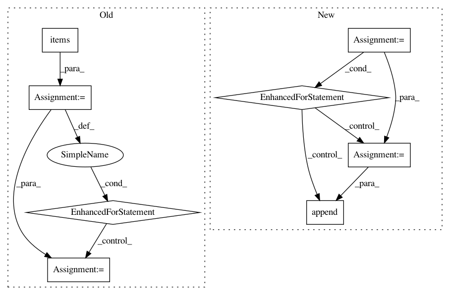

bcf38b02cc7209d1baccd1302b5224f5faf2f00a,plugins/train/model/_base.py,_Inference,_make_inference_model,#_Inference#Any#,1454
Before Change
logger.debug("Compiling model")
layer_dict = {layer.name: layer for layer in saved_model.layers}
compiled_layers = dict()
for name, inbound in struct.items():
if name not in required_layers:
logger.debug("Skipping unused layer: "%s"", name)
continue
layer = layer_dict[name]
logger.debug("Processing layer "%s": (layer: %s, inbound_nodes: %s)",
name, layer, inbound)
if not inbound:
logger.debug("Adding model inputs %s: %s", self._input_names, self._inputs)
model = layer(self._inputs)
else:
layer_inputs = [compiled_layers[inp] for inp in inbound]
logger.debug("Compiling layer "%s": layer inputs: %s", name, layer_inputs)
model = layer(layer_inputs)
compiled_layers[name] = model
retval = KerasModel(self._inputs, model, name="{}_inference".format(saved_model.name))
logger.debug("Compiled inference model "%s": %s", retval.name, retval)
return retval
After Change
if layer.name not in struct:
logger.debug("Skipping unused layer: "%s"", layer.name)
continue
inbound = struct[layer.name]
logger.debug("Processing layer "%s": (layer: %s, inbound_nodes: %s)",
layer.name, layer, inbound)
if not inbound:
model = model_inputs
logger.debug("Adding model inputs %s: %s", layer.name, model)
else:
layer_inputs = []
for inp in inbound:
inbound_layer = compiled_layers[inp[0]]
if isinstance(inbound_layer, list) and len(inbound_layer) > 1:
// Multi output inputs
inbound_output_idx = inp[1]
logger.debug("Selecting output index %s from multi output inbound "
"layer: %s", inbound_output_idx, inbound_layer)
layer_inputs.append(inbound_layer[inbound_output_idx])
else:
layer_inputs.append(inbound_layer)
logger.debug("Compiling layer "%s": layer inputs: %s", layer.name, layer_inputs)
model = layer(layer_inputs)
compiled_layers[layer.name] = model
retval = KerasModel(model_inputs, model, name="{}_inference".format(saved_model.name))
In pattern: SUPERPATTERN
Frequency: 3
Non-data size: 8
Instances
Project Name: deepfakes/faceswap
Commit Name: bcf38b02cc7209d1baccd1302b5224f5faf2f00a
Time: 2021-01-31
Author: 36920800+torzdf@users.noreply.github.com
File Name: plugins/train/model/_base.py
Class Name: _Inference
Method Name: _make_inference_model
Project Name: dpressel/mead-baseline
Commit Name: 71bd73748b835de5ae20bdc90ce4321e47f4c2b2
Time: 2019-09-25
Author: dpressel@gmail.com
File Name: python/eight_mile/tf/layers.py
Class Name: EmbeddingsStack
Method Name: call
Project Name: Rostlab/nalaf
Commit Name: fe41a42ff872debbc18f465f003a314f5ad19d29
Time: 2015-09-20
Author: carsten.uhlig@gmail.com
File Name: nala/utils/tagger.py
Class Name: TmVarTagger
Method Name: generate_abstracts